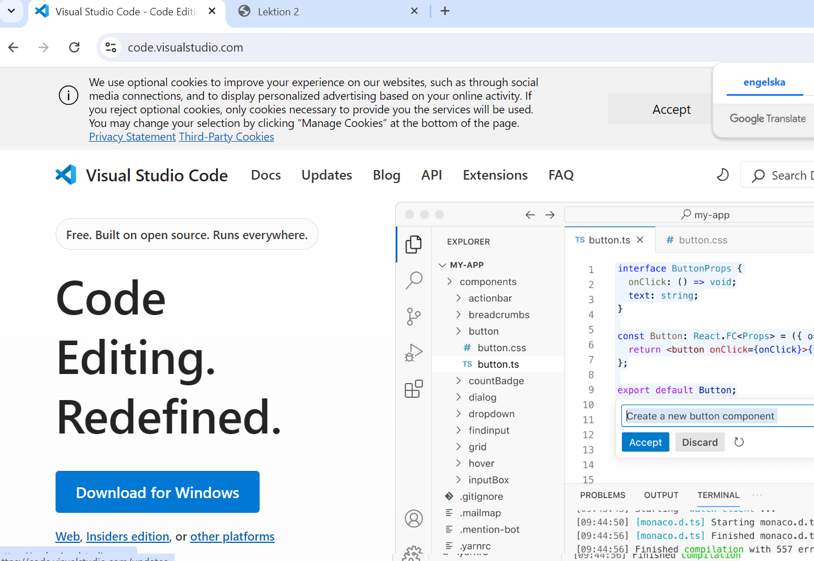

Installation av Texteditor
Grunder i html
Installation av texteditor
Det är valfritt vilken texteditor som används och om du är osäker vilken du vill använda rekommenderas Visual Studio Code.
VSCode kan laddas ner från: visualstudio.com

Grunder i html
Genomgång av källkoden till den här html-sidan
För mer förklaring av de olika taggarna rekommenderas w3schools
1. Skapa en mapp för den här kursen
1.1 Tryck win + e för att öppna utforskaren
2. Skapa en mapp i den mappen som heter lektion 5
3. Skapa en textfil i den mappen som heter index.html. Använd valfri texteditor för att skriva text i filen
4. Experimentera med att lägga in html-taggar